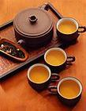

茶叶的分类

茶叶大致分六大类：黑茶、红茶、青茶、绿茶、白茶和黄茶。每一类里都有一些上等品。在这六大类茶中，很多人会把绿茶和青茶误认为同一种类别，其实不然。因为青茶是属于半发酵茶，而绿茶则属于不发酵茶。
青茶
青茶又叫做乌龙茶，青茶介乎于红茶和绿茶之间，它既有红茶甘甜香醇的特色，又有绿茶鲜美浓郁的味道，它属于"性和不寒"的茶叶。它的制作特色是通过做青，也就是茶叶经过手工筛选后不断摇动，因而使叶片的边缘与其他叶片边缘互相碰撞而产生了霉性的氧化作用，所以出现了茶叶心青、茶叶边缘红的特点。所以青茶又有"绿叶红镶边"的美称。当做青适度时，立即用锅炒杀青的方法，迅速抑制茶叶的霉性氧化，形成杀青独特的品质特性。做青之后的茶叶需要靠揉和捻的方法，使茶叶缩卷成条形。
挑选这类茶要挑肥厚、外形结实沉重、大部分叶片呈螺旋形、茶叶边缘有朱红色的锯齿、而叶片则呈墨绿色、乌润有光、带兰花的香味。
像安溪的铁关音、武夷大红袍、台湾乌龙茶都属于青茶。
除了极品南岩铁观音、茶中之王大红袍，还有产于台湾南投县鹿谷乡的冻顶乌龙都是青茶中的皎皎者。而且，上好的冻顶乌龙在冲泡之后又一股强烈的、近似桂花的香味。
冲泡青茶的方法是用100度的水温开茶，然后用98度的水冲泡5次，但最后一泡最好用95度的水温。第一泡5秒、第二泡5秒、第三泡10秒、第四泡20秒、第五泡1分钟。
绿茶
绿茶是不发酵茶，它是经过高温杀青后，保持了茶叶嫩叶原有的青绿色泽。绿茶沏出的茶色是色绿汤清、香气清幽、滋味鲜爽。绿茶性寒、抗癌，属于保健饮料，但是胃寒的人饮用时要注意。
绿茶的制作特色是必须经过杀青的工序，通过杀青来破坏鲜叶的组织。茶叶通过高温杀青之后，酶受到了破坏，因而抑制了酶促作用，茶叶里包含的物质就会迅速地转化，因而形成了绿茶色、香、味的特点。
挑选绿茶要挑茶叶形状扁平、色泽嫩绿微黄、茶叶光滑均匀、茶色清澈明净、味道醇美、略带甘香。像碧箩春这种上品茶，茶叶形状像雀舌、叶面细扁略带卷曲、叶面披满白毫、嫩绿微黄带油润、香味持久、有白?花的味道。
上好的绿茶有狮峰龙井、碧箩春、黄山毛峰等等。
绿茶中属龙井最有名，其实龙井茶本身喝起来没有什么味道，就像哥感觉的那样。但这也就是狮峰龙井的特点。不知道哥是否听说过这样的说法：极品狮峰龙井闻之高香，然啜之味淡、但入腹便觉有一种太和之气，弥漫齿颊之间。据说当年乾隆游江南时，一位老和尚向乾隆奉茶，乾隆喝完便有此种感觉，赞道："佳茗者，无味之味乃至味也。"说的正是狮峰龙井。
还有黄山毛峰也是绿茶皎皎者。上品黄山毛峰清香四溢，茶凉之后任然香味?存，所以古人称它"幸有冷香"，有冰清玉洁的美称。
冲泡绿茶要先用100度的水开茶，然后用80度左右的水温冲泡。第一泡1分钟、第二泡2分钟、第三泡3分钟、第四泡5分钟（黄茶的冲泡时间和绿茶一样）。绿茶和黄茶的冲泡时间是最容易记住的。